Front Door Window Regulator: Service and Repair
HatchbackGlass/Regulator/Glass Run Channel Replacement
1. Remove:
^ Door panel
^ Plastic cover
2. Remove the power window switch from the door panel, then connect it to the door harness.
3. Lower the glass fully.
4. Peel off the channel guide cover, then remove the screws.
NOTE: When installing the channel guide cover, apply the double-faced adhesive tape to it.
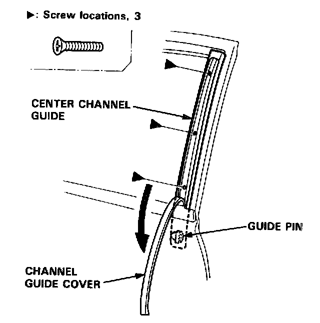
5. Remove the center channel guide by pulling it upward.
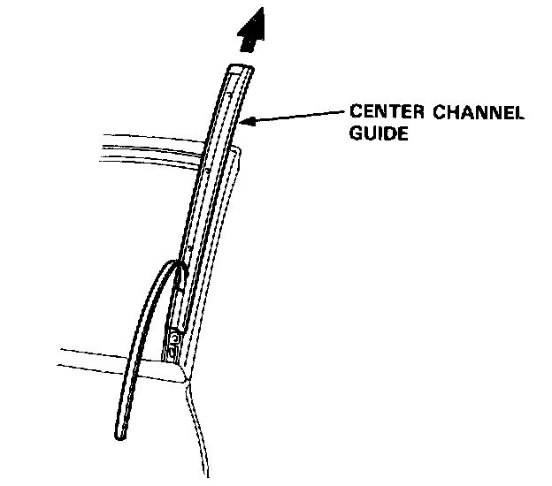
6. Carefully move the glass until you can see the bolts, then loosen them.
Slide the guide to the rear, then remove the glass from the guide.
NOTE: Take care not to drop the glass inside the door.
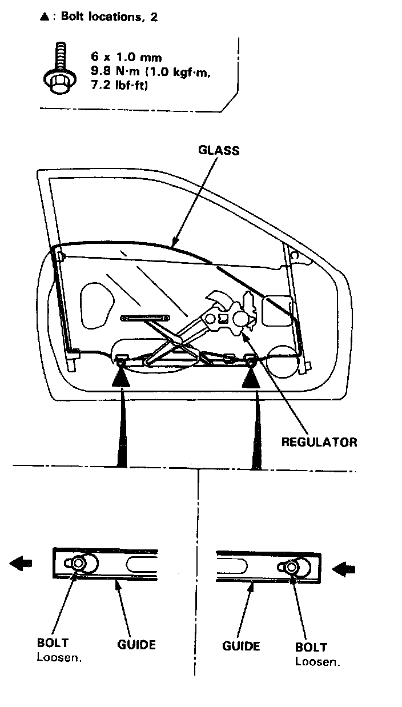
7. Carefully pull the glass out through the window slot.
NOTE:
^ Take care not to drop the glass inside the door.
^ Check the guide pin for damage, and replace it if necessary.
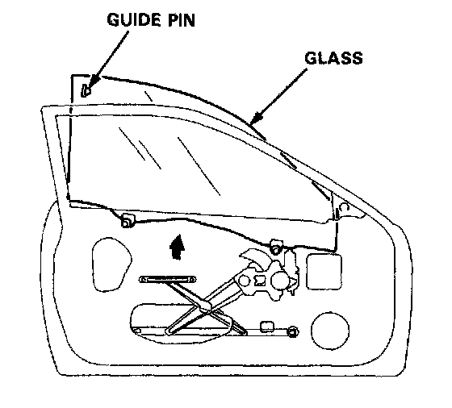
NOTE: Scribe a line around the guide pin to show the original location.
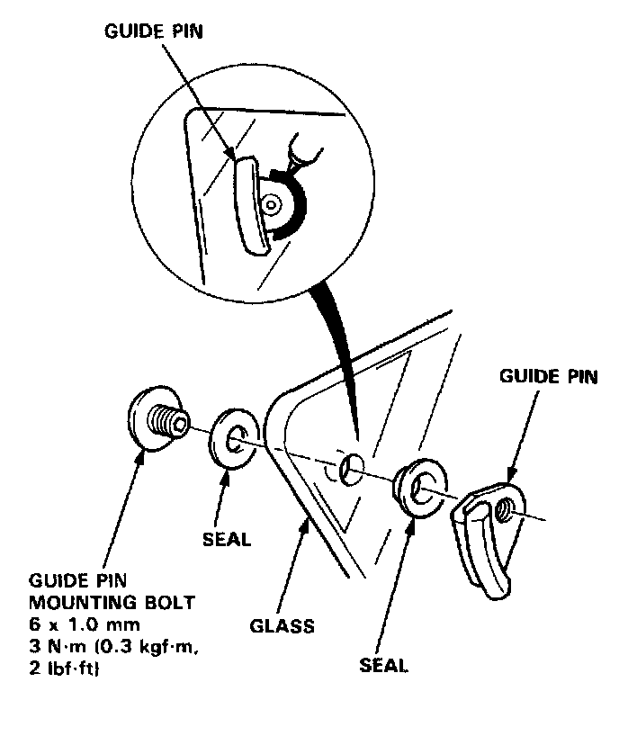
8. Disconnect the connector, then remove the regulator through the center hole in the door.
NOTE: Scribe a line around the rear roller guide bolt to show the original adjustment.
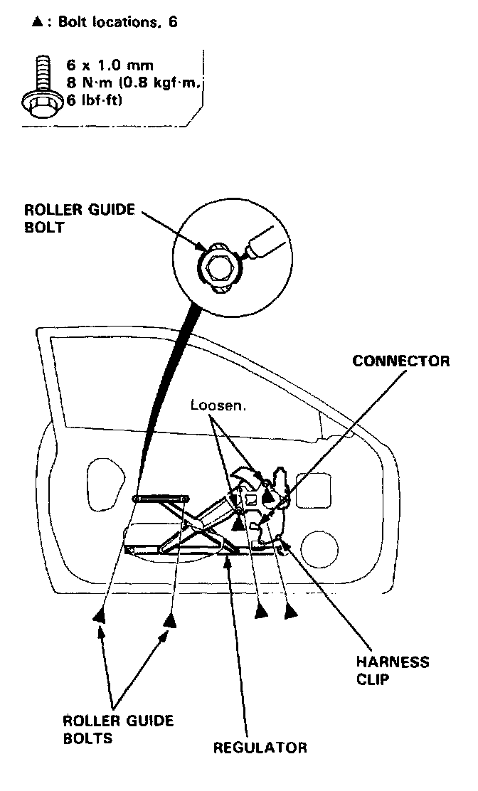
9. Remove the power window motor from the regulator.
NOTE: Before removing the power window motor, mark the location by scribing a line across the sector gear and regulator.
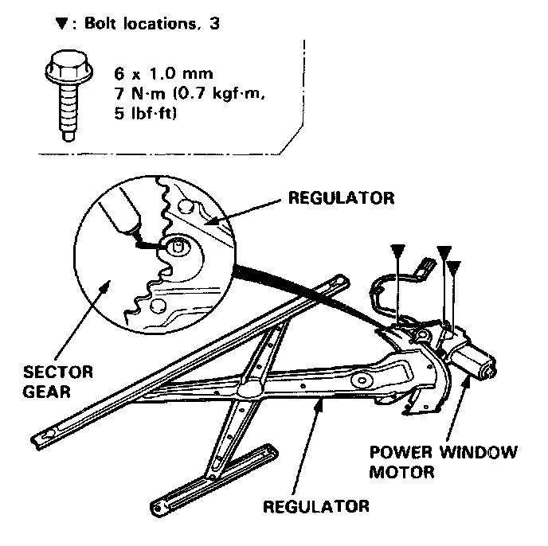
10. Detach the clips, then peel and remove the glass run channel.
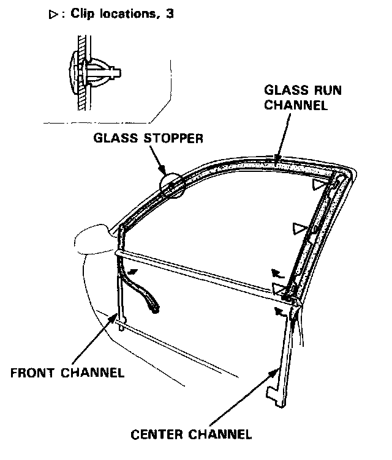
NOTE: If necessary, remove the glass stopper.
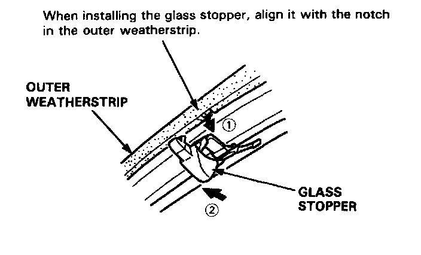
11. Grease all the sliding surfaces of the regulator where shown. Install the power window motor on the regulator.
Check that the regulator moves smoothly by connecting a 12 V battery to the power window motor.
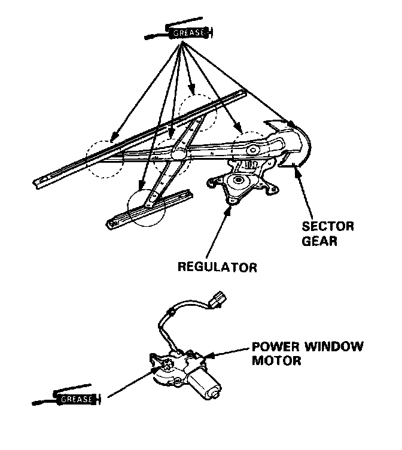
12. Apply clear sealant to locations� on the door as shown, then install the glass run channel.
NOTE:
^ If necessary, replace any damaged clips.
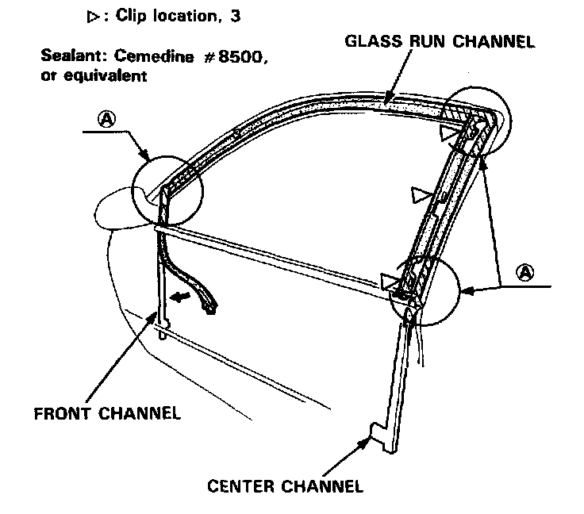
^ Fit the glass run channel into the front channel and on the door as shown.
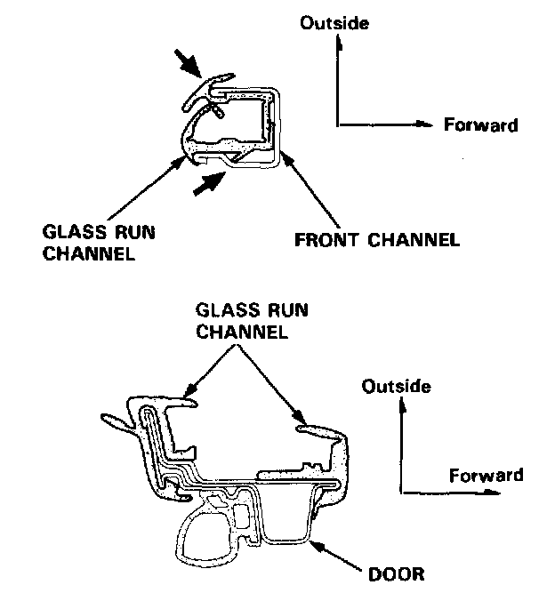
13. Install the regulator.
NOTE: Make sure the connector is connected properly.
14. Install the glass.
15. Install the center channel guide and channel guide cover.
NOTE: Make sure the guide pin is installed in the center channel guide properly.
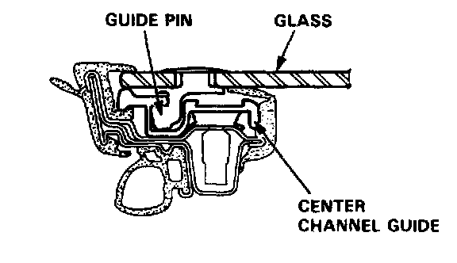
16. Roll the glass up and down to see if it moves freely without binding. Also make sure that there is no clearance between the glass and glass run channel when the glass is closed. Adjust the position of the glass as necessary.
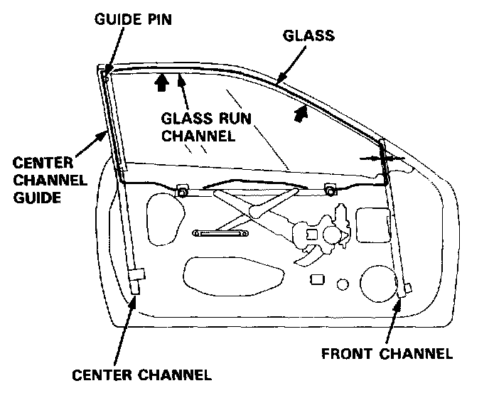
17. Attach the door harness to the door correctly.
18. Disconnect the power window switch from the door harness, then install the power window switch on the door panel.
19. When reinstalling the plastic cover, apply adhesive along the edge where necessary to maintain a continuous seal and prevent water leaks.
20. Install the door panel.
Sedan Front
Glass/Regulator/Glass Guide Replacement
1. Remove:
^ Door panel
^ Plastic cover
2. Remove the power window switch from the door panel, then connect the door harness.
3. Move the glass until you can see the glass stoppers, then remove them.
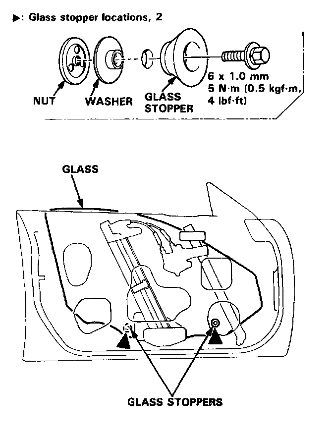
4. Carefully move the glass until you can see the glass mounting bolts, then remove them.
NOTE: Scribe a line around the glass mounting bolts to show the original adjustment.
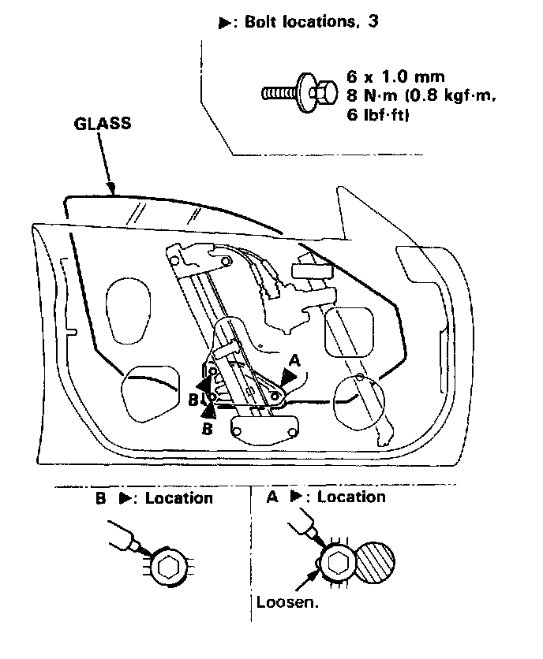
5. Carefully pull the glass out of the window slot.
NOTE: Take care not to damage location on the front sash.
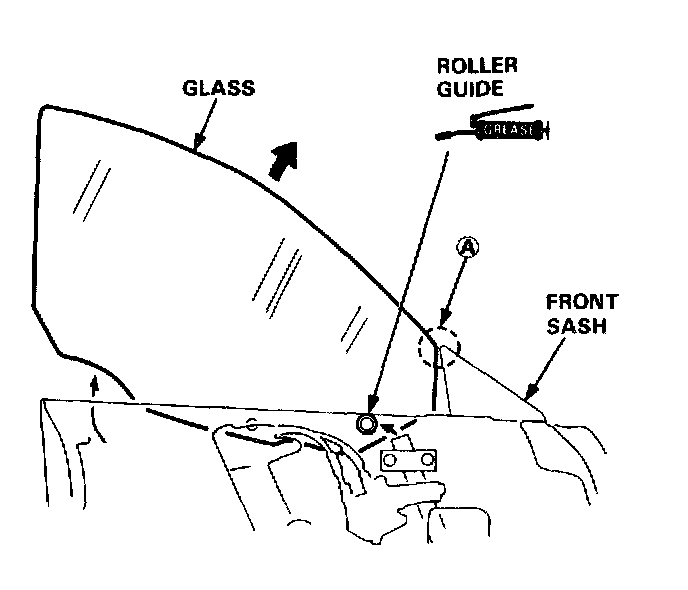
6. Remove the inner handle.
7. Disconnect the connector, and remove the regulator through the center hole in the door.
NOTE:
^ Hold the adjusting bolts with a hex wrench when removing the locknuts.
^ Scribe a line around the locknuts to show the original adjustment.
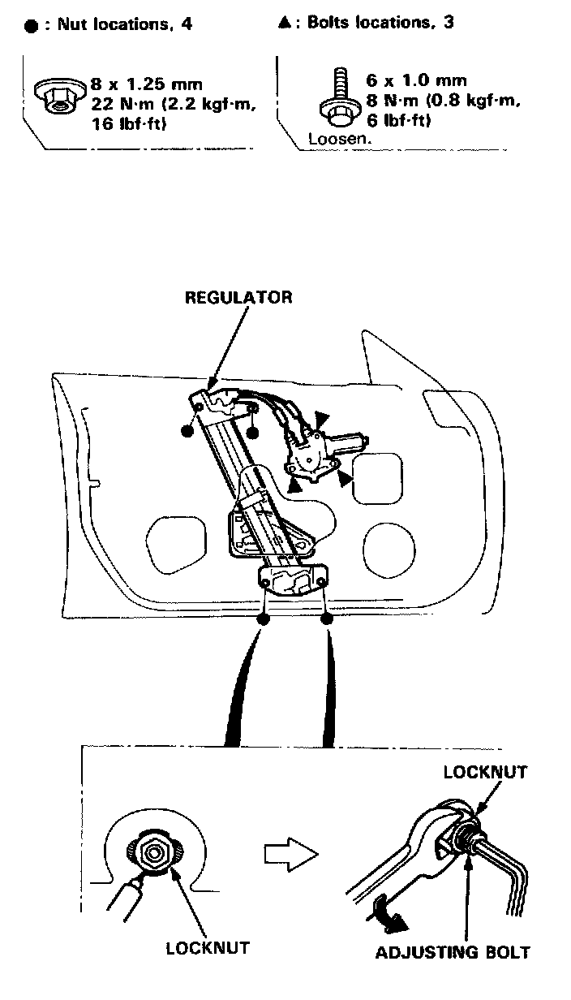
8. Remove the glass guide.
NOTE:
^ Hold the adjusting bolt with a hex wrench when removing the locknut.
^ Scribe a line around the mounting nut to show the original adjustment.
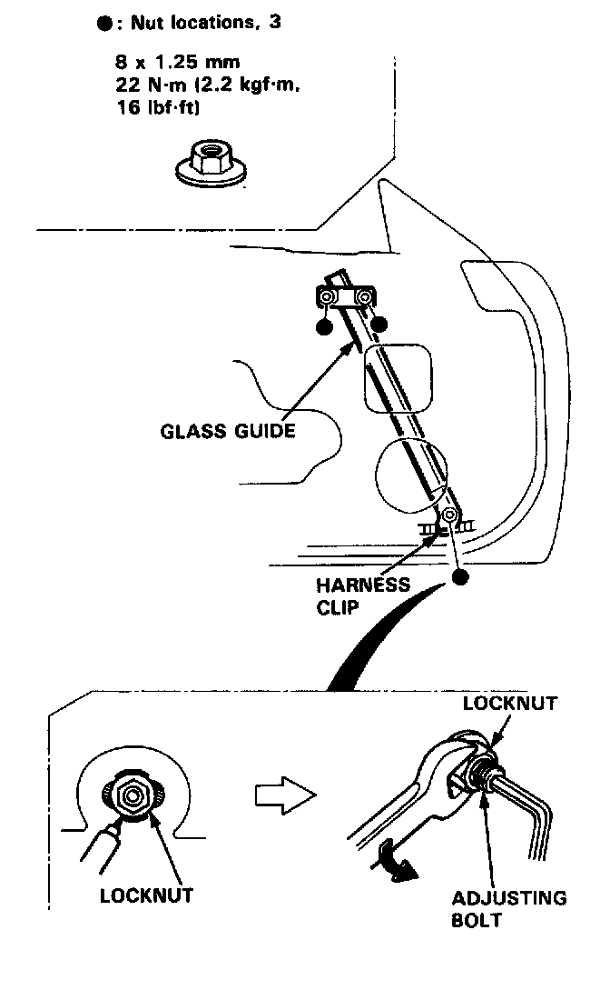
9. Grease all the sliding surfaces of the regulator and glass guide where shown.
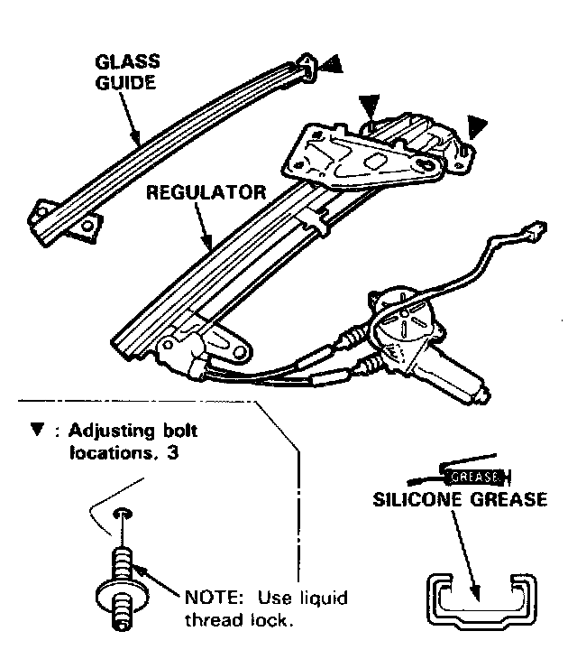
10. Roll the glass up and down to see if it moves freely without binding. Also make sure that there is no clearance between the glass and weatherstrip when the glass is closed. Adjust the position of the glass as necessary.
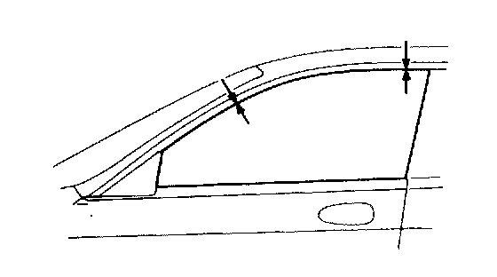
11. Attach the door harness to the door correctly.
12. Disconnect the power window switch from the door harness, then install the power window switch on the door panel.
13. When reinstalling the plastic cover, apply adhesive along the edge where necessary to maintain a continuous seal and prevent water leaks.
14. Install the door panel.